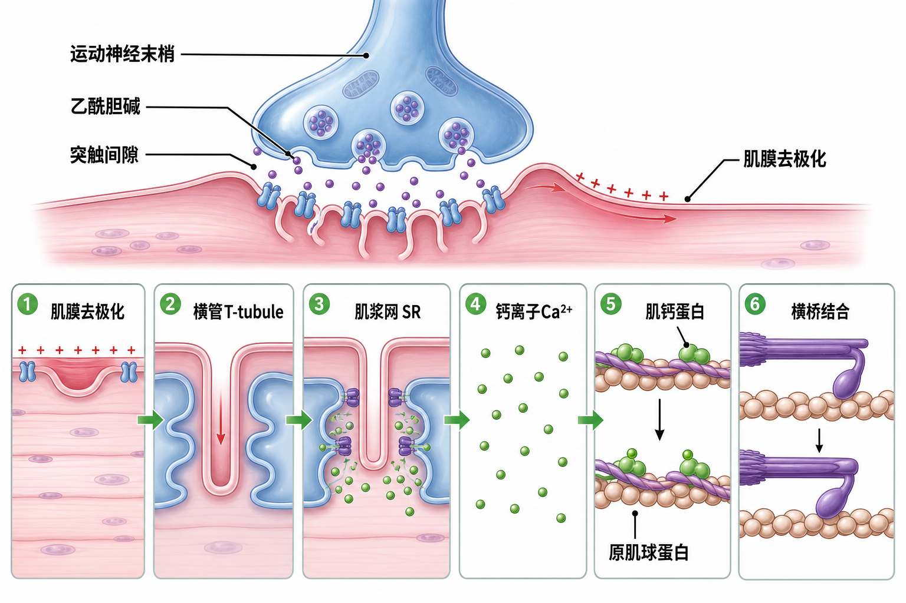

Day 26 · 神经肌肉接头与兴奋-收缩耦联完整钙链条
一句话总结
肌肉不是“听见神经就立刻缩”，而是先在神经肌肉接头接收乙酰胆碱，再沿肌膜和横管把信号送进肌纤维，最后靠肌浆网放钙、钙去推开原肌球蛋白，横桥才有机会抓住肌动蛋白。 这条链一断，力就上不去。

核心要点
-
神经肌肉接头: 运动神经末梢释放乙酰胆碱，肌膜先接到“开工信号”。
先抓结论: 神经信号到肌肉之间，不是电线直连，而是靠化学信号传话。底层机制
字面意思
神经末梢释放乙酰胆碱(ACh, acetylcholine)，ACh 进入突触间隙并结合肌膜受体，促使钠离子内流，肌膜去极化，动作电位从这里开始。
大白话
像按门铃。神经不是亲手把门推开，而是先按响门铃；肌肉门口受体听到后，才把“有人来了”变成可传播信号。
训练含义
起跳、起杠、冲刺前几步都看这层。神经驱动差时，肌肉不是完全没力，而是启动慢、发力散、峰值来得晚。
乙酰胆碱进入突触间隙后，不是直接让肌纤维缩短，而是先改变肌膜电位。只有肌膜完成去极化，后续信号才有机会沿整条肌纤维跑开。
真实例子举 1RM、起跳、短冲刺时，神经系统要先把大量运动单位叫醒。没有这一层，肌肉横截面积再大也不一定能立刻出力。
常见误解❌以为 ACh(乙酰胆碱) 直接“把肌肉拉短”。✅其实它只是点火，真正收缩还要后面钙链条接上。
-
动作电位传导: 信号沿肌膜走，再钻进横管 T-tubule，触发深部肌纤维同步反应。
先抓结论: 横管像“地铁隧道”，把表面电信号带进肌纤维深处。
表面信号
肌膜去极化只是在肌纤维表面点火。没有横管，深处肌原纤维收到命令会慢，整块肌肉难以同步发力。
深部传导
T-tubule 是肌膜向内凹陷形成的管道，把动作电位带到肌纤维内部，贴近肌浆网钙释放通道。
输出质量
越需要爆发，越需要信号到达快且同步。疲劳后发力断续，常和膜兴奋性、离子环境、钙释放效率一起有关。
训练含义步骤 发生什么 意义 肌膜去极化 ACh(乙酰胆碱) 让膜电位改变。 把“神经到达”变成可传播的电信号。 T 管传导 动作电位沿横管下潜。 让深层肌原纤维一起收到命令。 SR 触发放钙 肌浆网打开钙库。 把信号翻译成可收缩状态。 大肌群动作不是只靠表层几根纤维干活。T 管和 SR 的同步性越好，整块肌肉越容易一起上场，动作越干脆。
常见误解❌以为电信号只在肌膜表面走一圈。✅其实关键是进入 T 管，把深处也叫醒。
-
钙链条: Ca2+ 结合肌钙蛋白，原肌球蛋白移位，横桥才露出结合位点。
先抓结论: 钙不是“肌肉的能量”，而是“开锁钥匙”。底层机制
字面意思
Ca2+ 从肌浆网释放到胞质，结合肌钙蛋白后改变其形状，原肌球蛋白移开，肌动蛋白上的结合位点露出来。
大白话
像把挡住门把手的横杆移开。横杆移开后，手才能抓上门把；钙做的是“开锁”，不是亲自把门拉开。
训练含义
高强度后半段掉速，不只因 ATP 少。Ca2+ 释放/回收、H+、K+ 等局部环境变差，也会让横桥抓拉效率下降。
Day6 讲过横桥循环，但那时缺的是“位点是否开放”。现在补齐这一步: 没有钙，原肌球蛋白挡住结合位点，横桥再想抓也抓不到。
真实例子力量掉速时，不一定是肌肉“没劲”，也可能是钙释放、回收或局部离子环境让横桥效率下降。
常见误解❌以为钙就是收缩本身。✅其实钙更像“允许收缩发生”的开关。
-
运动单位: 一个 α 运动神经元及其支配的所有肌纤维，是募集的基本单位。
先抓结论: 你不是一根一根叫肌纤维，是按“运动单位”打包叫醒。大小原则(Size Principle)
字面意思
一个 α 运动神经元连着一组肌纤维。只要这个神经元发放信号，它支配的整组肌纤维会按同一命令响应。
大白话
像一个遥控器管一排灯泡。你按一次不是只亮一盏，而是一组一起亮；不同遥控器管的灯泡数量也不同。
训练含义
新手力量先涨，常不是肌肉立刻变大，而是神经更会招人、发放更稳、协同肌少抢戏，主动肌输出更集中。
小运动单位先募集，大运动单位后募集。低力任务先叫小队伍，高力任务再把大队伍拉上来。
常见误解单位 特征 先后 小单位 阈值低、耐疲劳、常见于轻稳动作。 先上 大单位 阈值高、爆发强、也更容易疲劳。 后上 ❌以为轻重量“只练小纤维”。✅其实轻重量也会带动高次数和疲劳，只是大单位更晚加入。
-
去募集: 力减小时，大运动单位先退出，系统按需降档。
先抓结论: 招人容易，撤人也有顺序；不是所有单位同时下班。真实例子
发生什么
外部负荷变轻、动作越过最难点、或中枢驱动下降时，高阈值大单位通常先撤出，小单位保留更久负责低力控制。
为什么重要
这解释了为什么收杠、落杠、减速和动作结束不是“突然没力”，而是神经系统按输出需求逐步降档。
训练含义
爆发训练要避免太早疲劳，否则大单位刚上场就被迫退。控制训练则要练会平稳降档，别让动作结束乱晃。
深蹲起立时，大单位在最难那一段帮助撑住；站稳后，系统自然会逐步撤兵，不会一直硬撑。
常见误解❌以为“募集”只会加，不会减。✅其实力下降时，去募集同样是神经控制的一部分。
-
完整链条: 神经信号、钙离子、横桥和运动单位是一条线，不是四个孤立知识点。
先抓结论: Day6 讲横桥，Day26 补“谁让横桥能开始”。训练判断
链条顺序
神经末梢放 ACh(乙酰胆碱) → 肌膜去极化 → T 管把信号送深 → SR 放 Ca2+ → 钙结合肌钙蛋白 → 横桥结合肌动蛋白。
训练里怎么看
爆发、力量和动作质量都受这条链影响。链越顺，神经命令越能兑现成实际力；链卡住，表现就是慢、抖、掉速。
和 Day27 的关系
募集是“叫谁上”，E-C coupling 是“叫上之后怎么缩”。Day27 会继续讲发放频率、同步化和神经效率。
如果动作慢、抖、掉速快，别只怪肌肉“没练大”。也要看神经驱动、钙处理和局部兴奋性有没有卡住。
常见误解❌以为神经问题和肌肉问题是两张皮。✅其实神经输出、钙链条和横桥效率是一整套。
常见误区
❌很多人以为 ACh(乙酰胆碱) 直接让肌肉缩短。✅其实它先让肌膜去极化，后面还有 T 管和 SR 放钙。
❌很多人以为钙是能量。✅其实钙是开关，不是燃料。
❌很多人以为小运动单位等于小肌肉。✅其实是神经元支配的纤维数量和阈值不同，不是肌肉大小本身。
记忆口诀
铃一响，膜先亮；T 管传，SR 放钙；钙开门，桥来抓；小先上，大后到；力一降，大先退。 记住这句，整条链就顺了。
翻转卡复习
实操关联
- 增肌: 先保动作质量，再追求足够募集和总张力；中后段掉速明显，常说明神经驱动和离子环境开始累。
- 爆发: 重点是高阈值运动单位能不能被及时叫醒，起杠、起跳、起跑都看这条链。
- 耐力: 更看重复募集和恢复能力；如果每次都叫不回去，后面动作就会散。
- 康复: 先把神经-肌肉重新接通，再谈负荷进阶，别一上来就硬堆重量。
- 技术: 动作越干净，说明神经传导、募集和钙链条越顺，代偿越少。